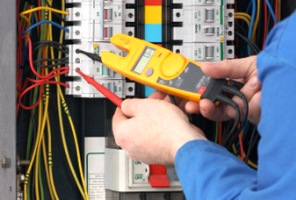

Частный электрикНиколай, недорого и Качественно.
Телефон - 8 904 642 08 57.

 |
|
Электроснабжение на дачном участке.
Сейчас трудно себе представить жизнь без использования электричества!
Широко распространенные мобильные телефоны для своей работы используют энергию аккумуляторных батарей. Их требуется периодически заряжать. Телевизор и радиоприемник также требуют питающего напряжения. Без этих предметов жизнь уже становится некомфортной. Освещение также использует электроэнергию для своей работы.
Конечно, если есть такая возможность, лучше всего подключить дачный домик к стандартной сети. Этот случай самый простой и экономически выгодный. Используя стандартную сеть на 220 вольт можно на даче держать и небольшой холодильник, а также использовать все электроприборы, рассчитанные на питание от сети.
Сколько стоит электроснабжение на даче?
|
Площадь пола в кв. м. |
Цена в руб. |
60 кв. м. |
От 50000 руб. |
70 |
60000 |
80 |
70000 |
90 |
78000 |
100 кв. м. |
85000 |
110 кв. м. |
От 90000 руб. |
От 110 кв. м. |
700 руб. за кв. м. по полу. |
Автономное электроснабжение дачи.
Иногда подключение к сети невозможно (по причине отсутствия вблизи линии электропередачи). В этом случае питание приходится делать низковольтным. Чаще всего используют для накопления и хранения электроэнергии 12 – вольтовые аккумуляторные батареи. В качестве таковых используют специально изготовленные «гелевые» аккумуляторы. Обслуживание таких аккумуляторов сводится к своевременной очистке от грязи и зарядке от внешнего источника. В качестве такого источника удобно применить солнечные батареи. Солнечные батареи изготавливаются из монокристаллического и поликристаллического кремния. Основное отличие таких батарей друг от друга в том, что для оптимальной работы батарей из монокристаллического кремния требуется, чтобы на них попадал прямой солнечный свет с высокой интенсивностью. Поликристаллические батареи способны вырабатывать ток и в пасмурный день, но при меньшей эффективности. Стоимость таких батарей примерно одинаковая. Отличаются они только гарантированным сроком службы (поликристаллические батарей имеют меньший срок службы, по сравнению с монокристаллическими).
Гелевые аккумуляторные батареи имеют срок службы 5-6 лет, но они весьма дорогие. Применение обычных автомобильных (стартерных) аккумуляторов позволяет добиться большей начальной экономии вложений, правда с меньшим сроком службы.
Для разводки питающей сети в дачном домике следует предварительно составить электромонтажную схему. Необходимо учесть всех потребителей заранее.
Мощность аккумуляторной батареи следует рассчитывать на возможность работы без подзарядки 20 часов. Солнечную батарею следует использовать с мощностью, позволяющую восполнить энергию аккумулятора с запасом в 1,4 раза. Таков коэффициент использования свинцовыми аккумуляторами энергии.
Обеспечить электроснабжением двухэтажный домик.
Пример: планируется обеспечить электроснабжением двухэтажный домик. В первую очередь следует определиться с местом установки осветительных приборов. При низком напряжении питания самым экономичным будет применение для освещения светодиодных ламп. При выборе светильников следует руководствоваться простым расчетом: на 1 квадратный метр площади стола достаточно освещенности в 200 люкс. Примерно такую освещенность дают два 1 – ваттных светодиода. Если руки «дружат с техникой» – такие лампы можно изготовить самостоятельно. В настоящее время трудностей, с приобретением комплектующих возникнуть не должно. Все можно купить на просторах интернета. При самостоятельном изготовлении следует учесть, что светодиоды большой мощности требуют применения эффективного охлаждения. Примерно на 1 ватт мощности светодиода следует использовать теплоотвод с площадью около 10 квадратных сантиметров. Лучше использовать металл с высокой теплопроводящей способностью (медь или алюминий).
Система электроснабжения дачи.
Самым лучшим способом считается переделка обычных промышленных светильников. Такие светильники часто имеют металлический (как правило – из алюминиевого сплава) корпус со значительной площадью. Такой корпус способен рассеять значительную мощность. Промышленный светильник имеет также и рассеивающее стекло, что повышает комфортность его использования.
Нужно предусмотреть в электромонтажной схеме место для нескольких розеток. Розетки используются для временного подключения различных нагрузок. Такими нагрузками может быть, например, водяной насос, либо телевизионный приемник. Выводы розеток (и вилок!) следует пометить знаками «+» и «-». При подключении электроприборов в дальнейшем следует учитывать полярность напряжения!
После составления схемы следует приступить к монтажным работам. Самым оптимальным для прокладки проводов считается применение пластиковых коробов. После монтажа коробов делаем прокладку монтажного провода. При проведении этих работ следует учитывать в будущем возможность использования электросети. Поэтому следует выбирать провода и розетки с выключателями стандартных типов.
 Поменять проводку в квартире.
Поменять проводку в квартире. Сколько будут стоить материалы.
Электрика в загородном доме стоимость работ.

Замена электропроводки в панельном доме.
Расценки на электропроводку квартир.
Замена проводки в хрущевке.
Электромонтаж в частном доме.
Электрика в загородном доме.
Сколько стоит замена электропроводки в двухкомнатной квартире?.
Электрик в новостройку однокомнатная квартира недорого.

Сколько стоит поменять электропроводку в 3-х комнатной квартире.